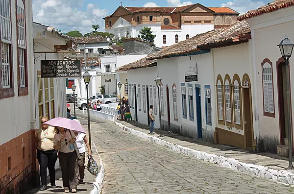

Goiás é um estado do Centro-Oeste do Brasil, com 246 municípios e uma população estimada de cerca de 7,5 milhões de habitantes em 2024. Conhecido por suas belezas naturais, como o Parque Nacional da Chapada dos Veadeiros, Goiás tem como governador Ronaldo Caiado. O estado se destaca pela forte produção agrícola, especialmente no setor de grãos e pecuária.
